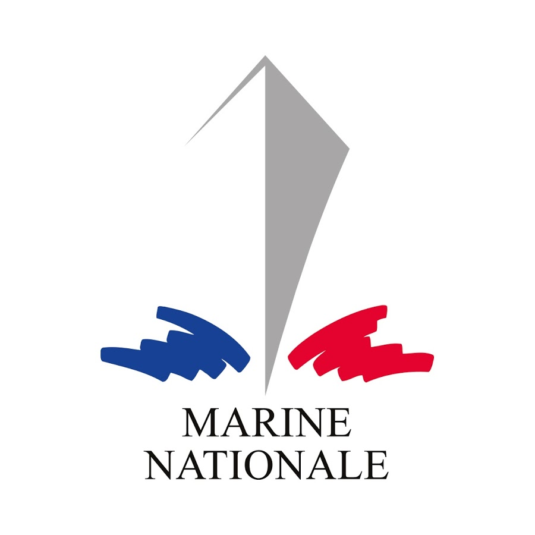

Profil
Mieux me connaître
Je m'appelle Genly Kenny, et je suis âgé de 30 ans.
Je suis marié et père de deux enfants.
J'ai effectué 5 ans de service dans L'
 où je me suis vu confié de nombreuses missions et postes à haute responsabilités.
où je me suis vu confié de nombreuses missions et postes à haute responsabilités.
Là-bas, j'y ai acquis le goût du travail sérieux et bien fait.
Depuis 2017, j'ai également souscrit un engagement dans la réserve de la , en tant que soldat de la .
J'y revêt l'uniforme selon les besoins de mon unité, en tant que Fusiller-Marin.
J'ai également travaillé quelques temps en boulangerie puis, lassé par ce métier j’ai décidé de m'offrir une nouvelle vie et changer d'emploi.
Après m'être renseigné longuement sur ce qui pourrait être succeptible de me plaire, j'ai choisi le parcours de développeur web.
Ainsi, depuis février 2017, je suis en apprentissage dans le développement web, et je suis en formation chez Simplon.co.
Je mets mon savoir-faire au service de vos projets : études des besoins, conseils techniques, développement et suivi technique des projets.


 de Roubaix le 20 février 2017 pour devenir intégrateur Web.
de Roubaix le 20 février 2017 pour devenir intégrateur Web.